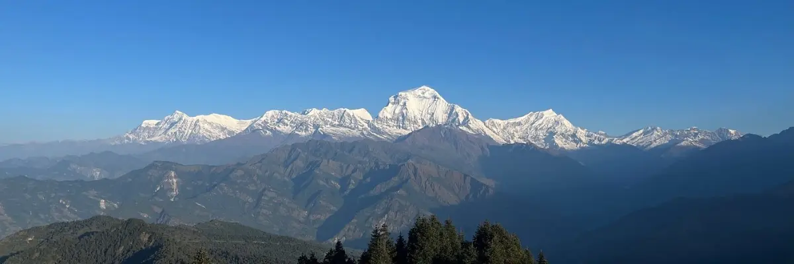
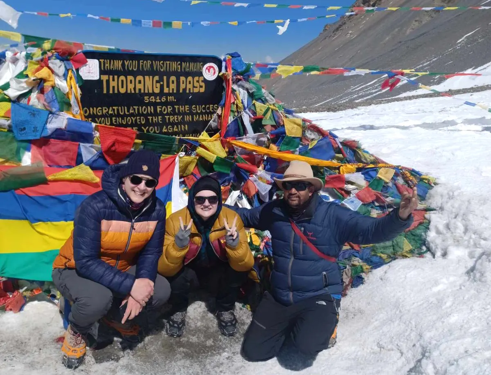
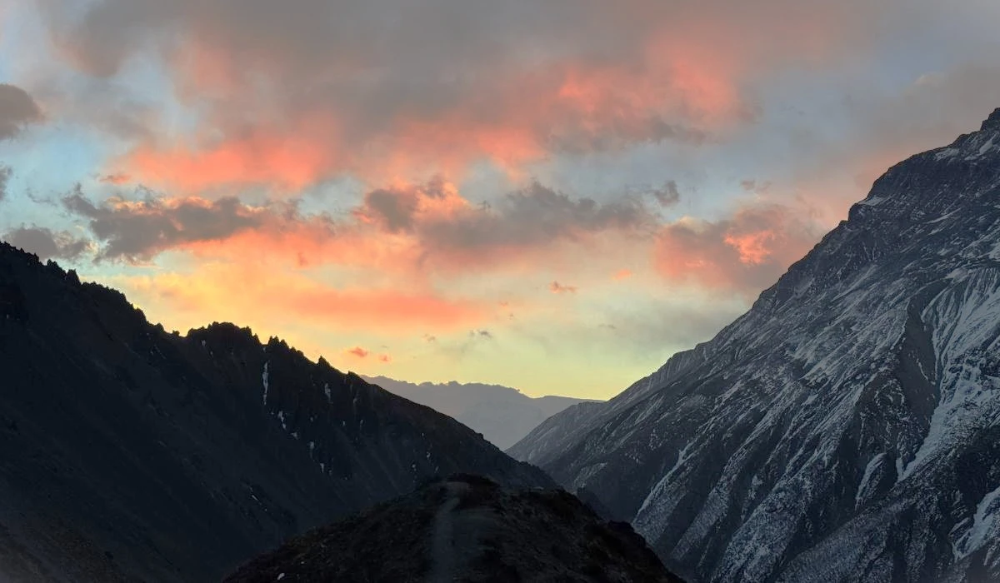

The Annapurna Circuit isn't just a trek—it's a journey through worlds. From subtropical forests to arid high-altitude deserts, from Hindu villages to ancient Buddhist monasteries, this legendary trail offers one of the most diverse trekking experiences on Earth. Completing the circuit means crossing the formidable Thorong La Pass at 5,416 meters, a challenge that rewards with unforgettable vistas and profound personal accomplishment.

The Allure of the Circuit
Unlike many treks that focus solely on reaching a single destination, the Annapurna Circuit is about the journey itself—a 160-230 kilometer loop that circles the entire Annapurna massif. When I first guided this trek over a decade ago, the road development was minimal, and the walk from Besisahar took nearly three weeks. While some sections are now accessible by road, the magic of the circuit remains intact for those willing to walk the less-traveled paths.
What makes this trek extraordinary is its incredible diversity. You begin in lush, terraced fields where farmers grow rice and millet, gradually ascending through rhododendron forests that burst into crimson bloom in spring. As you climb higher, the vegetation changes dramatically—from dense forests to alpine meadows, and finally to the stark, beautiful landscapes of the Tibetan Plateau that lie in the rain shadow of the mountains.
"The Annapurna Circuit gives you not just mountains, but the soul of Nepal." — Apa Sherpa
The cultural journey parallels the geographical one. Starting in Hindu villages with their intricately carved wooden houses, you gradually enter regions influenced by Tibetan Buddhism, where prayer wheels, mani walls, and colorful monasteries become part of the landscape. This transition happens so gradually that you hardly notice it until you find yourself spinning prayer wheels and saying "Tashi Delek" instead of "Namaste."
From Foothills to High Peaks: The Trek Unfolds
The Beginning: Besisahar to Chame
The adventure typically begins in Besisahar, a bustling town that serves as the administrative center of Lamjung District. From here, the trail follows the Marshyangdi River upstream through ever-changing landscapes. The first days are relatively gentle, allowing trekkers to find their rhythm while passing through picturesque villages like Bahundanda (Hill of Brahmins) and Jagat.
By the time you reach Chame (2,710m), the district headquarters of Manang, you've entered a different world. The air grows crisper, the views more dramatic, and Annapurna II (7,937m) makes its first appearance, towering above the valley. Chame itself is charming, with its natural hot springs—perfect for soothing tired muscles after several days of walking.

Manang: Acclimatization and Ancient Traditions
Manang (3,540m) requires a rest day for proper acclimatization, but this is no hardship. The village feels like stepping into a living museum of Tibetan culture. The narrow streets are lined with traditional stone houses, prayer flags flutter from every rooftop, and the ancient Bhotia Monastery houses priceless thangkas (Buddhist paintings).
Use your acclimatization day wisely. Many trekkers hike to Ice Lake (4,600m) or visit the Himalayan Rescue Association's clinic for an altitude talk. I always recommend visiting Gangapurna Lake, a stunning turquoise glacial lake at the foot of Gangapurna Glacier. Watching the sunset paint the surrounding peaks in alpenglow while prayer bells sound from the monastery is an experience that stays with you forever.
Beyond Manang, the landscape becomes increasingly arid and dramatic. The trail climbs steadily to Yak Kharka (4,050m) and then to Thorong Phedi (4,450m), the last stop before the pass. Here, surrounded by towering peaks, you can feel the anticipation building. Everyone checks their gear, drinks endless cups of ginger tea, and tries to sleep despite the altitude and excitement.
Thorong La Pass: The Ultimate Test
The Ascent: A Night to Remember
Summit day begins in darkness. Headlamps bob like fireflies as groups set out between 3 and 5 AM, aiming to cross the pass before the notorious afternoon winds pick up. The air is bitterly cold, often well below freezing, but the physical exertion of climbing soon warms you up.
The final push to Thorong La Pass (5,416m) is relentless—switchback after switchback on a trail carved into the mountainside. The altitude makes every step an effort, and breathing becomes a conscious act. But as dawn breaks, revealing the surrounding peaks in soft morning light, the beauty of the moment outweighs the discomfort.

Conquering Thorong La
The key to successfully crossing Thorong La is pacing. Go slowly ("bistari bistari" in Nepali), drink plenty of water, and listen to your body. The ascent from Thorong Phedi typically takes 4-6 hours. Celebrate briefly at the top (photos with the sign are mandatory!), but don't linger too long—the descent to Muktinath is almost as challenging as the ascent.
Weather can change rapidly. We once had a group caught in unexpected snow at the pass. Our guide's experience and preparation (extra layers, emergency shelter) turned a potentially dangerous situation into a memorable adventure. Always respect the mountains.
The Descent: From Snow to Sanctuary
Reaching the pass is only halfway—the 1,600-meter descent to Muktinath (3,800m) tests knees and patience in equal measure. But what a descent it is! You leave the stark beauty of the high mountains and descend into the lush Kali Gandaki Valley, the world's deepest gorge.
Muktinath holds special significance for both Hindus and Buddhists. The temple complex features 108 water spouts (believed to wash away sins) and eternal flames fed by natural gas. After the physical and mental challenge of crossing Thorong La, there's something profoundly spiritual about arriving here. Many trekkers, regardless of their religious beliefs, find themselves moved by the sacred atmosphere.
Cultural Tapestry of the Annapurna Region
A Journey Through Ethnic Diversity
One of the circuit's greatest gifts is its cultural richness. You'll encounter Gurungs in the lower regions, known for their hospitality and traditional honey hunting. Higher up, the Manangis (Nyeshang) have been traders for centuries, historically controlling salt trade between Tibet and India. Their distinctive stone houses with flat roofs are architectural marvels adapted to the harsh climate.
In Muktinath and beyond, Tibetan influence becomes dominant. The Thakali people, renowned as innkeepers and traders, operate most of the teahouses in this region. Don't miss trying Thakali cuisine—a delicious dal bhat variation with unique local pickles and buckwheat dishes. Their hospitality is legendary, born from centuries of accommodating travelers on this ancient trade route.

Monasteries and Meditation
The circuit is dotted with spiritual sites. In Braga, just beyond Manang, the 500-year-old monastery clings to a cliff face, housing ancient Buddhist manuscripts. In Kagbeni, the red-walled monastery feels timeless, with resident monks maintaining centuries-old rituals. The most spiritual moment for many trekkers happens unexpectedly—perhaps watching monks debate in a courtyard or joining a morning prayer ceremony.
"In these mountains, every stone tells a story, every prayer flag carries a hope." — Local Saying
I remember one evening in Marpha, known as the "Apple Capital of Nepal." An elderly monk invited our group to join his evening meditation. As we sat in silence, the scent of apples from nearby orchards mixing with incense, the day's fatigue melted away. These unplanned encounters often become the most treasured memories.
The Changing Face of Trekking
The Annapurna Circuit has evolved significantly. Road construction has shortened the traditional trek, but innovative alternatives like the Annapurna Circuit Trek (ACT) have emerged, using higher trails to avoid roads. The growth of teahouse tourism has brought economic opportunity but also challenges regarding waste management and cultural preservation.
Responsible trekking matters more than ever. Support local businesses, carry out your trash, respect cultural norms, and consider traveling during shoulder seasons to reduce pressure on popular routes. The Annapurna Conservation Area Project (ACAP) has done remarkable work balancing conservation and community needs—your permit fees directly support these efforts.
Planning Your Annapurna Adventure
Best Time to Trek
Autumn (September to November) offers clear skies, stable weather, and spectacular mountain views. Spring (March to May) brings blooming rhododendrons and warmer temperatures but increasing clouds as monsoon approaches. Winter (December to February) is possible but extremely cold at higher elevations, with some teahouses closed. Monsoon (June to August) is generally not recommended due to leeches, landslides, and obscured views.
Route Options and Variations
The classic circuit takes 12-21 days depending on pace and route choices. Popular variations include:
- Classic Circuit: Besisahar to Nayapul via Thorong La (14-18 days)
- Shortened Circuit: Jeep to Chame or Manang, then trek (10-12 days)
- ACT with Tilicho Lake: Adds 2-3 days for a side trip to one of the world's highest lakes
- Annapurna Sanctuary: Combine with a visit to Annapurna Base Camp (adds 4-5 days)
- Nar-Phu Valley: A remote detour requiring special permits (adds 4-6 days)
Permits and Regulations
Two permits are required: Annapurna Conservation Area Permit (ACAP) and Trekker's Information Management System (TIMS) card. These can be obtained in Kathmandu or Pokhara. Since 2023, independent trekkers must hire at least a guide. This policy aims to improve safety and create local employment. Always carry multiple passport photos and copies of your documents.
For restricted areas like Nar-Phu, additional permits are required and must be arranged through a registered trekking agency at least one week in advance.
Essential Gear for the Circuit
The circuit's diversity demands careful packing. You'll experience tropical heat, freezing cold, rain, and possibly snow. Essential items include:
- Layered clothing system (moisture-wicking base to waterproof shell)
- Quality sleeping bag rated to -10°C (teahouse blankets vary)
- Broken-in hiking boots plus camp shoes/sandals
- Trekking poles (crucial for descent from Thorong La)
- Headlamp with extra batteries (for early starts)
- Water purification (tablets or filter—avoid plastic bottles)
- Comprehensive first aid kit including altitude medication
- Sun protection (high-altitude sun is intense)
- Power bank (charging becomes expensive at higher elevations)
Teahouse Trekking: What to Expect
The Annapurna Circuit is a teahouse trek, meaning you'll stay in family-run lodges each night. Standards vary widely—from basic rooms with shared toilets in remote areas to comfortable lodges with attached bathrooms in popular stops. Meals are served in communal dining rooms warmed by yak dung stoves, perfect for sharing stories with fellow trekkers.
Typical costs (2024): Room: $2-5 per night (often free if you eat meals there), Meals: $4-8 each, Hot shower: $2-5, Charging: $1-3 per hour, WiFi: $2-5 per day (often unreliable at higher elevations). Carry enough Nepali rupees as ATMs disappear after Chame.
Training and Preparation
While less technically demanding than some treks, the circuit requires good cardiovascular fitness and mental stamina. Recommended preparation:
- 3-4 months of regular hiking with a loaded pack
- Focus on endurance over speed—aim for 5-6 hour walks
- Incorporate stair climbing and hill repeats
- Practice walking on uneven terrain
- If possible, train at altitude or use altitude training masks
- Break in your boots thoroughly before departure
The Legacy of the Trail
Completing the Annapurna Circuit leaves an indelible mark. The physical challenge of Thorong La, the cultural richness of the villages, the breathtaking landscapes—these experiences weave together into a transformative journey. But perhaps the most lasting impact comes from the people you meet along the way.
I've seen hardened travelers moved to tears by the kindness of a teahouse owner who offered their last blanket on a cold night. I've watched friendships form between people from opposite sides of the world as they shared the struggle and triumph of the pass. I've witnessed trekkers return year after year, drawn back not just by the mountains, but by the communities that have become like family.

The circuit is changing, as all things do. Roads bring both connection and disruption. Climate change visibly affects glaciers and weather patterns. Yet the essential magic remains: the challenge of the pass, the warmth of a teahouse hearth, the sound of prayer wheels turning in the wind, the sight of dawn breaking over snow-capped peaks.
If you choose to walk this ancient trail, do so with respect—for the mountains, for the cultures, for the fragile environment. Travel slowly when you can, choosing footpaths over roads. Learn a few words of Nepali. Support local initiatives. Leave each place better than you found it.
The Annapurna Circuit is more than a trekking route. It's a living corridor of culture, a testament to human resilience, and a window into the soul of the Himalayas. Whether you're contemplating your first Himalayan adventure or returning for your tenth, the circuit calls with the promise of transformation.
As the Nepali saying goes: "The journey of a thousand miles begins with a single step." Your Annapurna journey begins with that first step onto the trail. The mountains await.